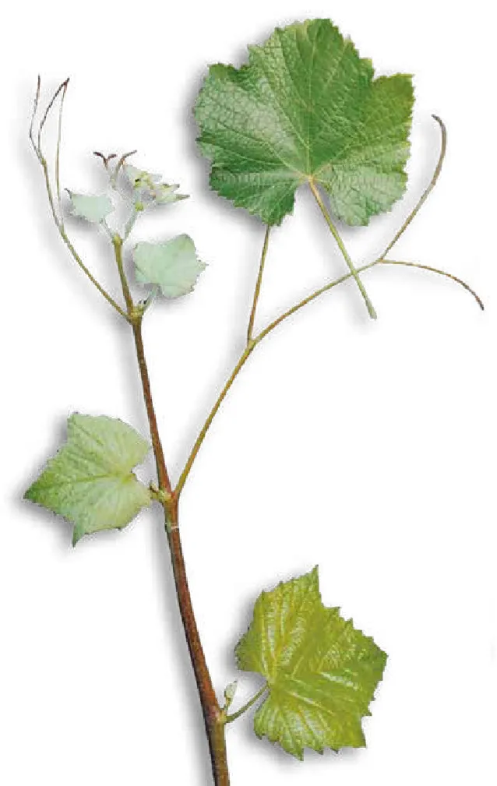
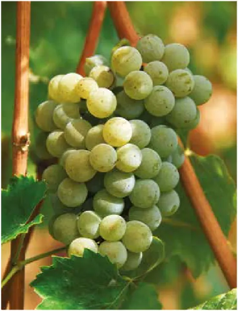

Kapitel 3 · Die portugiesischen Rebsorten
Alvarinho (W)
Herkunft:
Rebsorte aus dem Nordwesten der Iberischen Halbinsel. Albariño bedeutet „die kleine Weiße vom Rhein“, und lange nahm man eine Verwandtschaft mit dem Riesling an. Der Legende nach brachten Mönche sie zwischen dem 11. und 13. Jahrhundert aus Deutschland oder Frankreich über den Pilgerweg nach Santiago de Compostela (Jakobsweg) nach Galicien. Neuere Erkenntnisse deuten jedoch darauf hin, dass Albariño eine regionale Sorte ist, wobei unklar ist, ob sie aus dem Minho oder aus Galicien stammt. Eine DNA-Analyse zeigt eine engere Verwandtschaft mit der portugiesischen Sorte Malvasia Fina. Lacerda Lobo (1790) verzeichnete die Sorte in der Unterregion Melgaço (Minho). Gyrão (1822) kannte sie im Norden des Minho, in der Unterregion Monção, und in Galicien (Rías Baixas, Spanien), doch damals wurde sie kaum geschätzt. Hauptanbaugebiet: Unterregion Monção.
Weinbeschreibung:
Ihre Eignung als Sortenwein zeigt sich an der Strohfarbe mit zitronengelben Reflexen. Sie hat ein intensives, ausgesprochen edles und üppiges Aroma, das von Quitte über Pfirsich, Banane, Zitrone, Passionsfrucht und Litschi (Fruchtaroma) bis zu Orangenblüte und Veilchen (Blütenaroma) reicht, aber auch an Haselnuss, Walnuss (nussige Töne) und Honig erinnert. So ergibt der Wein einen ungewöhnlich reichen, eleganten und vielschichtigen Gesamteindruck mit langem Abgang (Mota, Garrido, 2001; EVAG, 2001).

Regionale Einstufung:
DOC-Qualitätswein: Unterregion Monção: Vinho Verde Alvarinho, Vinho Verde Alvarinho Schaumwein.
Landwein: Minho, Estremadura, Ribatejo, Terras do Sado.
Morphologie:
Junger Trieb (Form der Triebspitze): offen, sehr dichte, flaumige Behaarung, weiß, mit sehr roter Spitze.
Junges Blatt: gelb mit bronzefarbenen Flecken, stark eingerollt, unterseits behaart, oberseits flaumig.
Blütenstand (Blütengeschlecht): zwittrig.
Junger Trieb: Knoten und Internodien auf der Rückseite rötlich, auf der Bauchseite grün. Starke Anthocyanfärbung der Knospen, waagerechte Haltung.
Ausgewachsenes Blatt: klein, rund, ungebuchtet, eingerollt, mittelgrün, mittlere Blasigkeit der Oberseite. Kurze, konvexe Zähne. Offene V-förmige Stielbucht, offene V-förmige obere Seitenbuchten. Behaarung auf der Unterseite. Flaumige Behaarung am Blattstiel. Blattstiel länger als die Hauptader.
Traube: klein, kleiner Flügel, oft 2 Flügel, mittlere Dichte, langer Stiel.
Beere: ungleichmäßig, mittelgroß, rund, gelblich, weiches Fruchtfleisch, eigener Geschmack.
Phänologie:
Austrieb: normal (zweite Märzhälfte).
Blüte: normal (Ende Mai).
Lesereife der Beere: normal (erste Augusthälfte).
Vegetatives und agronomisches Potenzial:
Wuchskraft der Triebe: hoch.
Schnittholzgewicht: 1.800–2.500 kg/ha, je nach Klon und Boden.
Triebhaltung (Wuchsform): halbaufrecht und waagerecht.
Länge der Internodien: lang, Knospen mittelgroß.
Trieblänge: wenige, lang, einige plagiotrop und sehr lang.
Fruchtbarkeitsindex der Knospen: hoch. Im Mittel 1,8 Blütenstände je Trieb. Normalerweise drei Knospen je Knoten.
Ertrag: Ausgewählte Klone mit passender Erziehung ergeben mittlere bis gute Erträge (7.500–12.000 kg/ha). (Statistischer RNSV-Wert: 6,07 kg/Rebe; Mittel von 40 Klonen in Monção.)
Ertragsbeständigkeit: beständig.
Gleichmäßigkeit des Ertrags: gering.
Winkler-Index: 1.583 bei 11 t/ha Ertrag (Montemor).
Empfohlener Ertrag: 6.000 l/ha.
Empfindlichkeit gegenüber abiotischen Faktoren: anfällig für Trockenstress, verträgt starken Wind und Sonne.
Anfälligkeit für Pilzkrankheiten: anfällig für Oidium und Peronospora sowie für Esca.
Anfälligkeit für Schädlinge: anfällig für Pockenmilbe (Erinose).
Traubengröße: sehr klein (je nach Klon; 90–150 g in heißen, 200 g in feuchten Gebieten).
Dichte der Traube: locker bis mittel.
Beerengewicht: klein bis mittel (1,2–1,3 g).
Beere: mittelstarke Haut, langes Stielchen. Fruchtfleisch weich, sehr saftig, unverwechselbarer Geschmack.
Erziehungssystem: Lange Triebe mit Zapfenschnitt ergeben geringeren Ertrag.
Bodenansprüche: bevorzugt die Granit- und Schieferböden von Monção, passt sich gut an leichtere Böden an.
Klimaansprüche: viele Sonnenstunden, mäßige relative Luftfeuchtigkeit.
Pflanzdichte: Rebabstand 1 m, Reihenabstand 2,5 m.
Bewässerung: in trockenen Regionen empfohlen.
Verrieseln/Kleinbeerigkeit: wenig Verrieseln; Kleinbeerigkeit kommt vor.
Verderb reifer Beeren: sehr gering.
Eignung für maschinelle Lese: bei niedrigeren Temperaturen möglich.

Önologie:
Weintyp: Tischwein höchster Qualität, Schaumwein und Branntwein.
Potenzieller Alkoholgehalt: hoch, 12 % vol. RNSV-Wert: 12,57 % vol. (40 Klone in Monção erfasst).
Natürliche Säure des Mostes: hoch (5,5–7 g/l). (RNSV: 9,29 g/l, 40 Klone in Monção erfasst.)
Oxidationsrisiko des Mostes: mittel.
Farbintensität des Weins: intensiv.
Farbton des Weins: intensives Strohgelb mit zitrusfarbenen Reflexen.
Tannine: monomer 4,0–18,0 mg/l; oligomer 11,0–180,0 mg/l; polymer 47,0–739,0 mg/l.
Oxidationsrisiko des Weins: mittel.
Alterungspotenzial: sehr gut, bis zu 10 Jahre. Auch gut für den Fassausbau geeignet.